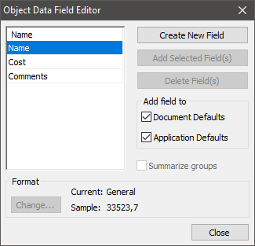
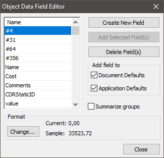
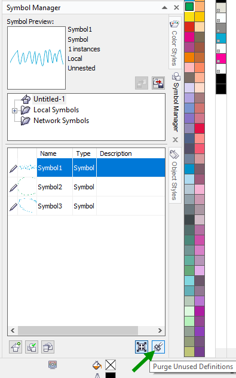

Очистка корела и макетов от мусора
Корел, по мере работы, накапливает кое-какие мусорные данные. Частично в макетах, а частично и в своих недрах. Данные эти неочевидные, передаются через копирование и импорт, таким образом “заражая” документы. Кроме увеличения размера файла документа, корел ещё его долго открывает, долго копирует объекты, да и вообще лишние операции не добавляют ни стабильности ни общей скорости работы.
Object Data
Проверено на корелах от 16-го до 24-го, возможно проблема существовала и раньше.
У корела есть такая штука, как дополнительные свойства объектов - object data. Видимо, нужны для проектирования и для чего-то такого, что требует привязки к кореловским объектам дополнительных данных (например, стоимости). Стоит только раз открыть файл, загаженный ненужными свойствами - эти данные, вернее - имена переменных, навсегда добавляются в кореловскую базу данных объектов и начинаются тормоза. Чтобы “заразиться” даже копировать ничего не надо - просто открыть.
Чтобы выяснить, насколько у вас всё в этом плане запущено - обратитесь к докеру object data manager (Window - Dockers - Object Data Manager). В нём нажмите кнопку Open Field Editor - и вам вывалится список переменных этой кореловской базы.
Если всё чисто, то там должно быть только несколько переменных по умолчанию: Name, Cost, Comments, CDRStaticID.

Если всё плохо - список будет больше.

Эту лабуду можно удалить вручную из документа - не бойтесь удалить лишнее, переменные по умолчанию потом сами восстановятся. Выделяем все, жмём Delete Fields. Но это будет ещё не кардинальное решение, мы почистили только сам документ - а нам надо обнулить кореловскую базу.
У 16-го корела база находится по пути %AppData%\Corel\CorelDRAW Graphics Suite X6\Draw\Object Data в файле ObjectData.xml.
Прибить - не вариант, восстановится. Можно просто вычистить из файла всё, или заменить его пустым с тем же именем. Перфекционистам можно сбросить его на файл по умолчанию, берём его здесь (у 16-го корела 64-битной английской версии, у других - по аналогии): %PROGRAMFILES%\Corel\CorelDRAW Graphics Suite X6\Languages\EN\Draw\Object Data\ и заменяем им файл в AppData. После чего заходим в свойства файла и ставим галочку “только для чтения”. Всё, база больше не будет пополняться.
Кроме этого, всё-таки придётся вручную проверять файлы и вычищать этот мусор из них - это конечно очень муторно, но только массовые чистки спасут Родину. Впрочем, и не вычищая каждый файл, а просто обнулив базу и закрыв её от записи, вы тоже добьётесь какого-то эффекта: на “чистых” и новых документах корел уже не будет тормозить.
Symbols, они же символы
Проверено в 16-м, но очевидно, что поведение символов с момента их внедрения и до сих пор не изменилось.
Символы могут быть удобной штукой в некоторых случаях, но в них есть подводный камень: если даже на рабочих пространствах документа удалить все экземпляры символов, в базе самого документа они остаются и импортируются, таким образом тоже создаётся своего рода “заражение”. Избавиться от символов документе довольно просто: заходим в докер Symbol Manager (Ctrl+F3) и жмём Purge Unused Definitions. Сработает это, конечно, только если символ не используется в документе, а является именно мусорным остатком.
